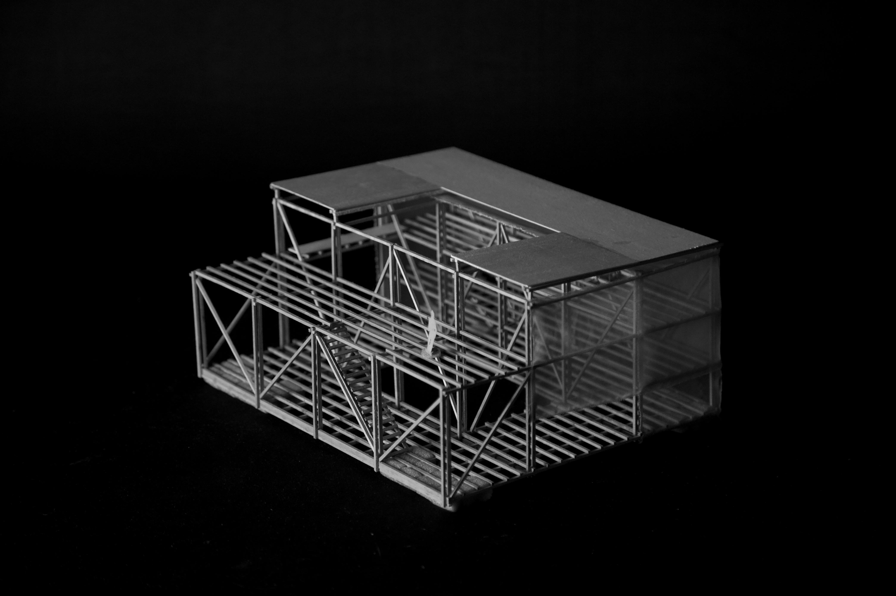
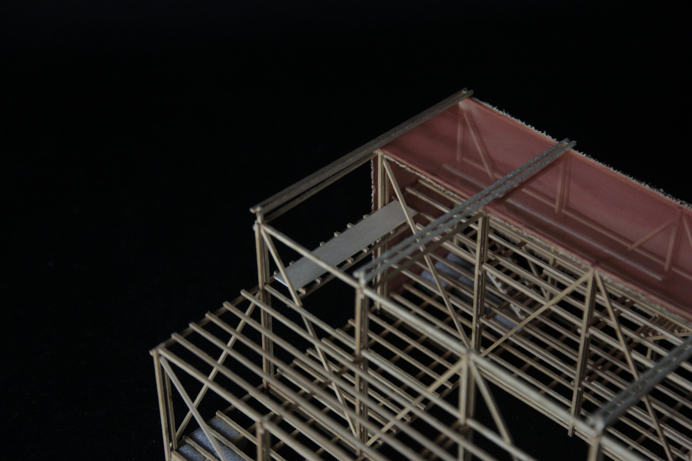

Flutuante
O Teatro Flutuante é resultado de um estudo espacial e estrutural desenvolvido ao longo de três semanas, com foco exclusivo na construção de uma maquete em escala 1:50. A proposta consistia na criação de uma estrutura flutuante inteiramente feita em madeira, utilizando peças modulares e explorando as possibilidades do sistema construtivo. O projeto teve como principal motivação a investigação dos encaixes e da lógica estrutural da madeira, sem apoio de representações técnicas digitais.
Através do processo manual e tridimensional da maquete, foram testadas articulações possíveis entre os elementos e a ocupação do espaço cênico sobre a água. O estudo propôs um teatro com organização flexível, destacando a leveza da madeira como material principal e sua capacidade de gerar formas adaptáveis. A materialização do projeto em maquete foi o principal instrumento de experimentação arquitetônica.
